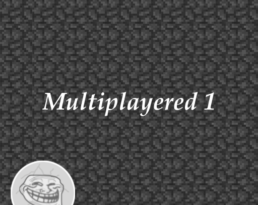

-
Multiplayered 1

Гонка с оффлайн-мультиплеером в виде сплитскрина (разделенного экрана).
-
Описание
Два, три или четыре шарика решили устроить забег на скорость - им необходимо первым выбраться из пещеры.
Пещеру можно разделить на 4 этапа:
- Первый этап - вертикальный подъем со случайно генерируемыми препятствиями;
- Второй этап - тоже вертикальный подъем со случайно генерируемыми препятствиями. Отличается от первого этапа неравномерной генерацией препятствий, а также сплошной перегородкой в середине подъема, которую нужно обойти через дыру в стене чуть ниже;
- Третий этап - квадратная комната с лабиринтом;
- Четвертый этап - лабиринт выходит из комнаты и продолжается уже в пещере. В конце этого расположен финиш - белая звезда, которой необходимо коснуться игроку для победы.
Единственной причиной, по которой эта игра была создана, является сплитскрин - экран, разделенный на отдельные секции для игроков. Секции имеют по возможности одинаковый размер, однако при игре на троих у третьего игрока будет более широкая секция. Естественно, что третий игрок из-за этого будет обладать преимуществом в виде большей видимой области карты, поэтому обзор всех игроков был ограничен путем затемнения всей карты: единственная область, которую видят игроки - это область, освещаемая вокруг игроков.
-
Управление
Управление описано для каждого игрока отдельно в его окне. -
Скриншоты
-
Как запустить
- Перейдите по ссылке ниже
- Скачайте .zip архив
- Распакуйте куда-нибудь
- Запустите Multiplayered 1.exe
- Готово!
-
Ссылки
Google drive